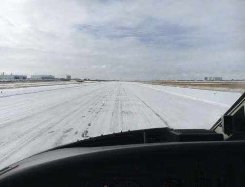

Lesson 03: Runway Surface States and Contaminant Identification
Lesson 3 of 10 · about 15 min
Learning objectives
Define the four runway surface states.
Identify the eight contaminant descriptors from observations and photos.
Explain the impact of the GRF on runway inspection work.
Name the contaminant correctly.
Four runway surface states
Tap a card to turn it over.
Fluid and hard contaminants
Eight descriptors exist (Annex 1 of EU 139/2014). They can be combined to describe the surface — for example dry snow on top of ice.
Tap a card to turn it over.
Contaminants in pictures (1)
Dry snow on an apron: light and loose, it falls apart when you blow on it. Source: Domestic Airlines GRF course.Wet snow: ice crystals with liquid water — compact, but no water runs out. Source: Domestic Airlines GRF course.

Compacted snow on a runway after a snowfall without decontamination: the vehicle does not sink in. Source: Domestic Airlines GRF course.
Contaminants in pictures (2)
Slush: water runs out when it is squeezed and splashes under the foot. Source: Domestic Airlines GRF course.Ice: very slippery, not shiny, after hours well below 0 °C. Source: Domestic Airlines GRF course.Wet ice: shiny and wet, after freezing rain when the temperature has just become positive. Source: Domestic Airlines GRF course.
Contaminants in pictures (3)
Frost: granular texture, more deposit on metal parts; calm wind, ground well below 0 °C. Source: Domestic Airlines GRF course.Standing water: only in puddles, deeper than 3 mm, positive temperature. Source: Domestic Airlines GRF course.
Exercise: identify the contaminant
Read the clues, decide, then tap to check.
Impact on the aerodrome operator
Before: in case of doubt a friction measurement or decelerometer was used. Now: the surface is described precisely with predefined codes and terms; friction values are not reported.
The operator issues the NOTAM / SNOWTAM, monitors the runway and performs as many inspections as necessary (ADR.OPS.B.037).
Contamination is no longer only a winter problem: an RWYCC and an RCR are published all year.
New procedures, new training, consistency between reality and what is published, consistency between actors, reliable exchanges with ATS (AIREP, RCR) and AIS (NOTAM, SNOWTAM).
Decision aids
Use the meteorological data and the reports of previous inspections to identify the contaminant. Pilots should know these descriptors: they are the words of the RCR.
Key takeaways
Four states: DRY, WET (≤ 3 mm), SLIPPERY WET, CONTAMINATED.
Eight descriptors: standing water, slush, wet snow, dry snow, compacted snow, frost, ice, wet ice — can be combined.
Identification uses observation, temperature and the history of the day.
Knowledge check
After freezing rain, the surface is shiny and wet; the temperature has just become positive. The contaminant is:
Frost
Wet ice
Slush
Standing water
Answer: B. Freezing rain followed by a rise above 0 °C gives wet ice.
Training material only. It does not replace the Aircraft Flight Manual, FCOM, QRH, MEL or the Domestic Airlines Operations Manual, which always take precedence.